Epidemiologia în sănătatea publică
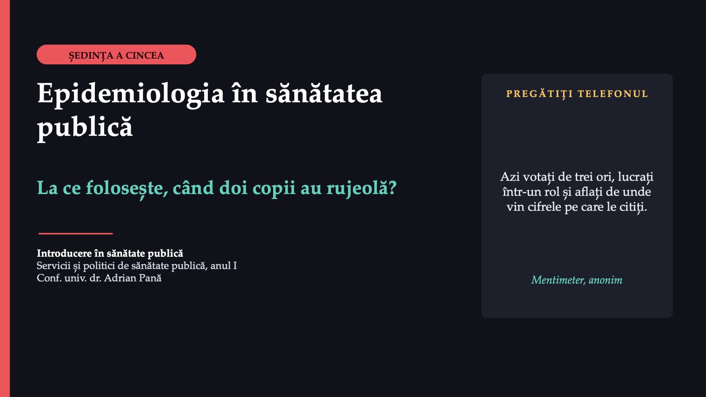
1 / 48Bună ziua. Azi urmărim un singur focar de rujeolă, de la primul telefon al medicului până la decizia care se ia pentru școală. Pe parcurs aflați și de unde vin cifrele pe care le citiți în știri și în rapoarte.
35 212
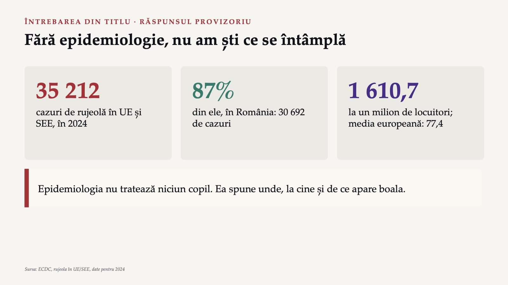
2 / 48Cifrele acestea sunt răspunsul cel mai scurt la întrebarea din titlu. România a raportat aproape nouă din zece cazuri europene, iar epidemiologia este cea care ne permite să vedem asta. Ea nu tratează niciun copil, dar spune unde, la cine și de ce apare boala.
Descrie, analizează, controlează, evaluează
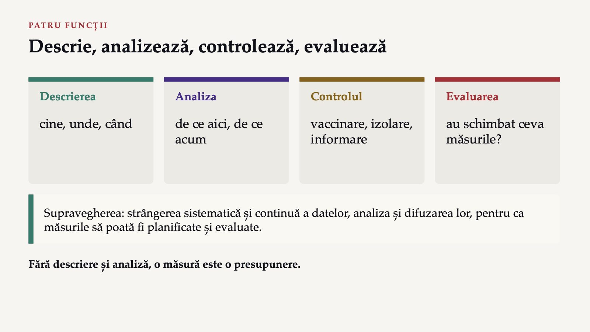
3 / 48Funcțiile sunt patru și au o ordine. Întâi descriem, apoi analizăm, apoi controlăm, apoi evaluăm. Legea sănătății publice definește supravegherea prin cuvintele sistematic și continuu: o numărătoare făcută o singură dată, după o știre, nu este supraveghere.
Cine produce cifrele pe care le citim?
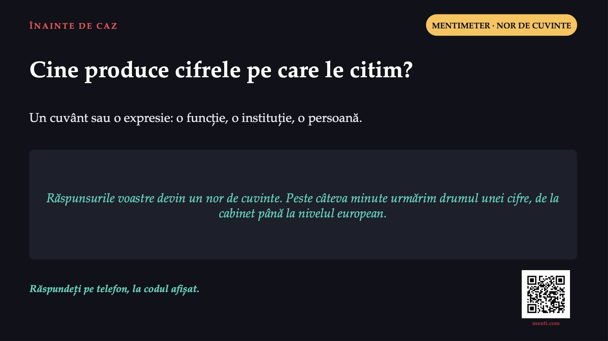
4 / 48Un cuvânt sau o expresie. Ne întrebăm cine produce cifrele pe care le citim și cine le folosește pentru o decizie sau pentru un titlu.
Trei acte, jumătate din timp lucrați voi
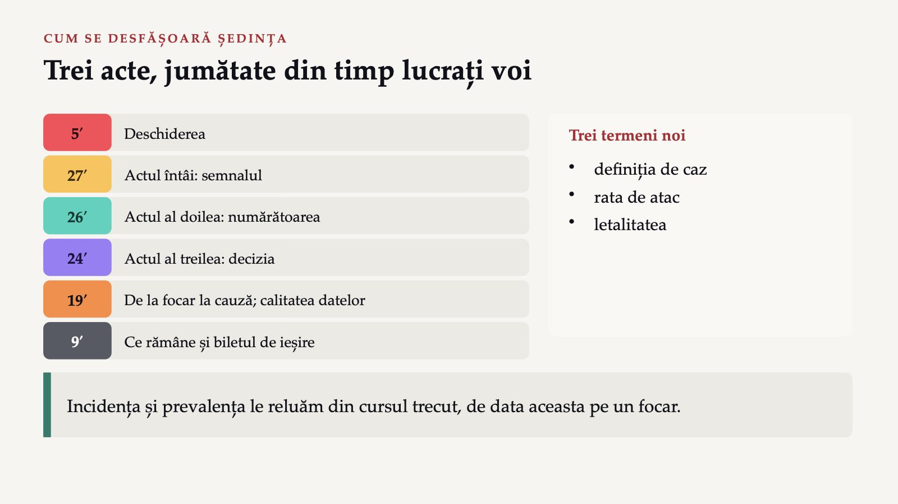
5 / 48Ședința are trei acte, iar jumătate din timp lucrați voi: votați, discutați cu colegul de bancă și, în actul al treilea, lucrați într-un rol. Azi aveți trei termeni noi, fiecare spus și în cuvinte obișnuite. Incidența și prevalența vă sunt cunoscute din cursul trecut.
Focarul de la Școala A
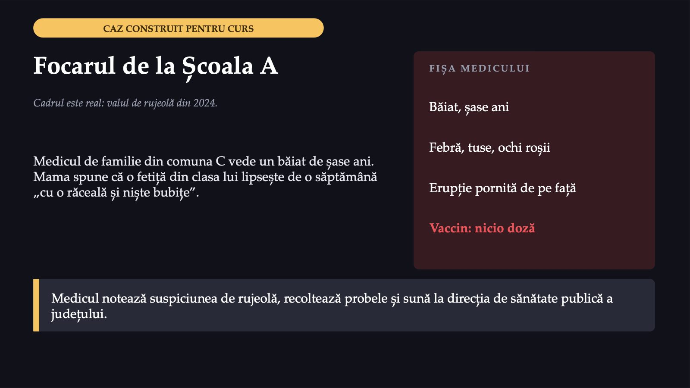
6 / 48Cazul este construit pentru acest curs. Cadrul este însă real: valul de rujeolă din 2024 și scăderea acoperirii vaccinale din anii dinainte. Un medic de familie vede un băiat cu semne tipice și nicio doză de vaccin în carnet. Notează suspiciunea, recoltează probele și sună la direcție.
Până seara
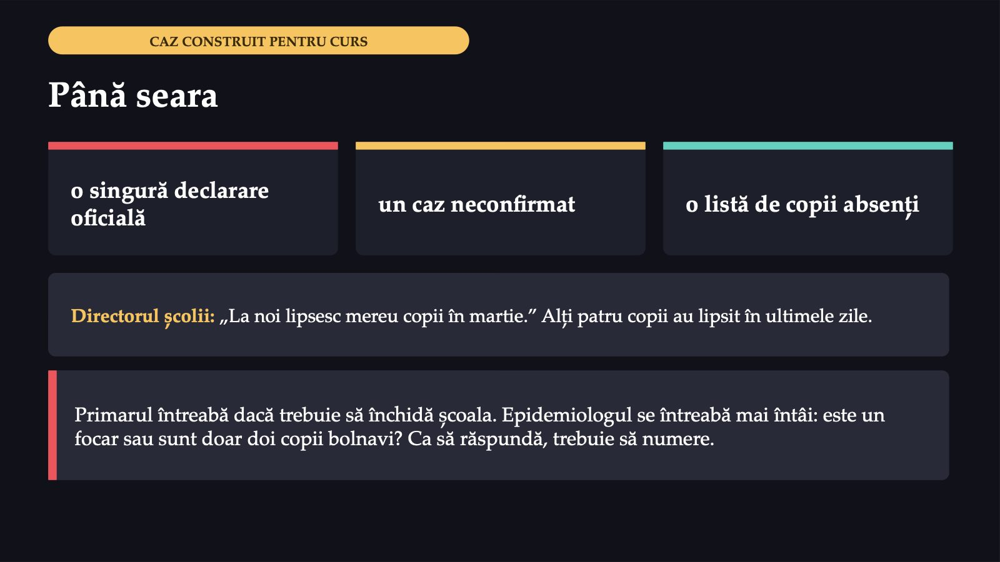
7 / 48Până seara, la direcție există o singură declarare oficială, un caz neconfirmat și o listă de copii absenți. Primarul a aflat deja și întreabă dacă trebuie să închidă școala. Înaintea oricărei măsuri, epidemiologul trebuie să numere, iar ca să numere, trebuie să știe ce numără.
Drumul unei declarări, de la cabinet la nivelul european
 8 / 48
8 / 48Gestul medicului de familie este începutul unui lanț cu patru niveluri: județean, național, european și internațional. Fiecare cifră pe care o veți citi în acest semestru a trecut prin aceste verigi. Dacă medicul nu declară, cazul nu există pentru nimeni.
Pe cine numără epidemiologul de la Școala A încă din prima zi?
 9 / 48
9 / 48Votați singuri, fără să vă consultați. Nu există încă un răspuns pe ecran; îl construim împreună după al doilea vot.
Pe cine numără epidemiologul din prima zi? (după discuție)
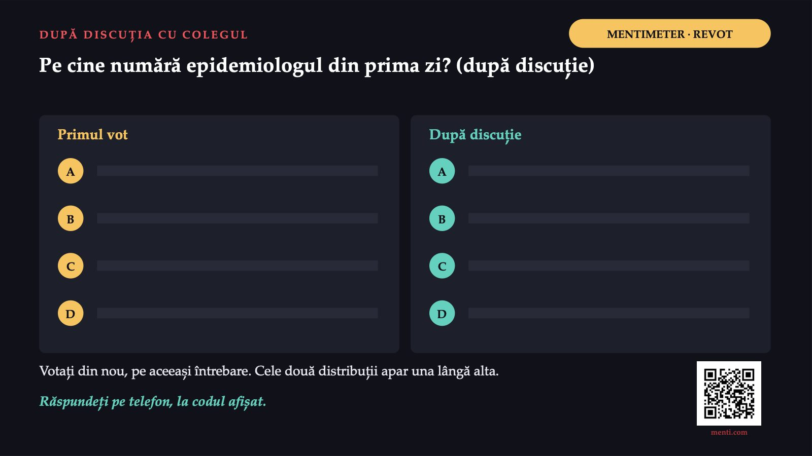
10 / 48Același vot, după ce ați vorbit cu colegul. Comparăm cele două distribuții, una lângă alta. Ca să judecăm votul, avem nevoie de primul termen nou.
Definiția de caz
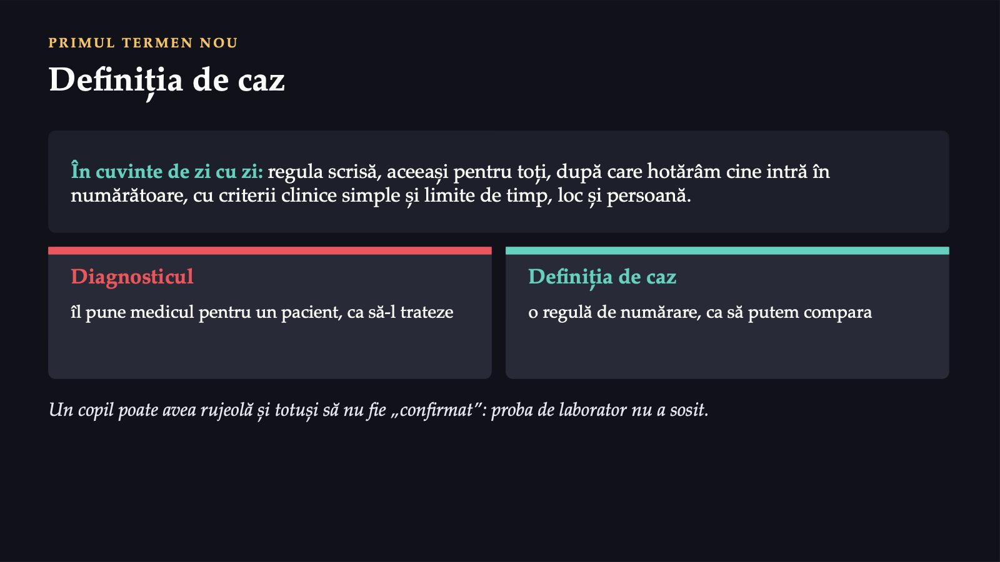
11 / 48Primul termen nou: definiția de caz. Diagnosticul îl pune medicul pentru un pacient, ca să-l trateze. Definiția de caz este o regulă de numărare, aceeași pentru toți, ca să putem compara. Un copil poate fi bolnav de rujeolă și totuși să nu intre încă în categoria confirmat.
Confirmat, probabil, posibil
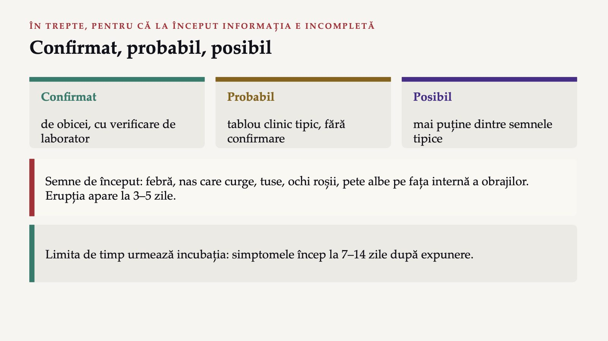
12 / 48Pentru că la începutul unui focar informația este incompletă, anchetatorii folosesc trepte care lasă loc incertitudinii. Limita de timp a definiției se alege știind cât durează de la expunere la boală.
Scrieți definiția de lucru pentru Școala A, într-o propoziție.
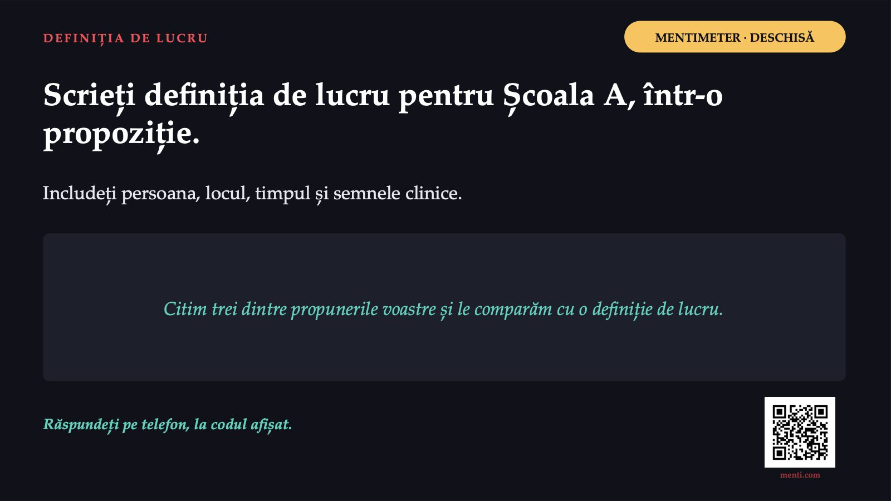
13 / 48O propoziție, cu persoana, locul, timpul și semnele clinice. Citim câteva dintre propunerile voastre.
Varianta B: o definiție scrisă, în trepte
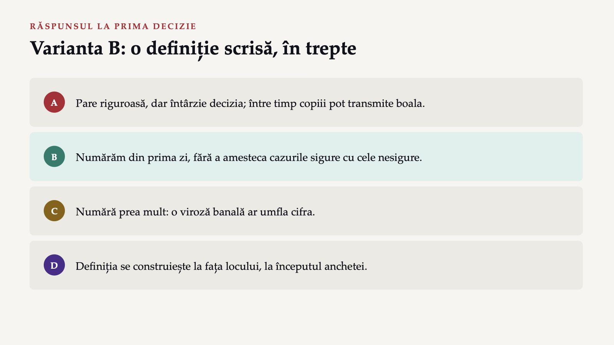
14 / 48Varianta B ne lasă să numărăm din prima zi, fără să amestecăm cazurile sigure cu cele nesigure. Varianta A pare cea mai riguroasă, dar întârzie decizia, iar în acest timp copiii pot transmite boala.
Persoană, loc, timp și semne
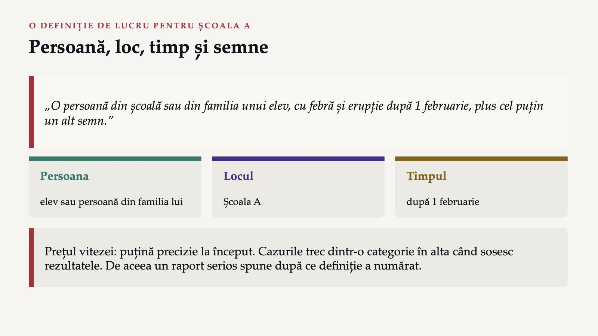
15 / 48Aceasta este o definiție de lucru posibilă. Prețul ei este puțină precizie la început: unele cazuri posibile se vor dovedi altceva. De aceea un raport serios spune întotdeauna după ce definiție a numărat.
Patru săptămâni mai târziu
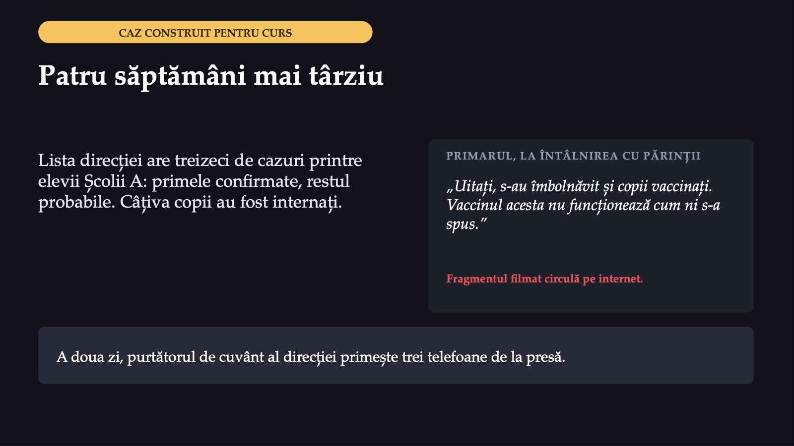
16 / 48După patru săptămâni, lista are treizeci de cazuri. Niciun copil nu a murit, dar câțiva au fost internați. La o întâlnire cu părinții, primarul spune că vaccinul nu funcționează, iar un părinte filmează și postează fragmentul. Purtătorul de cuvânt al direcției trebuie să răspundă presei.
Trei copii vaccinați printre treizeci de bolnavi
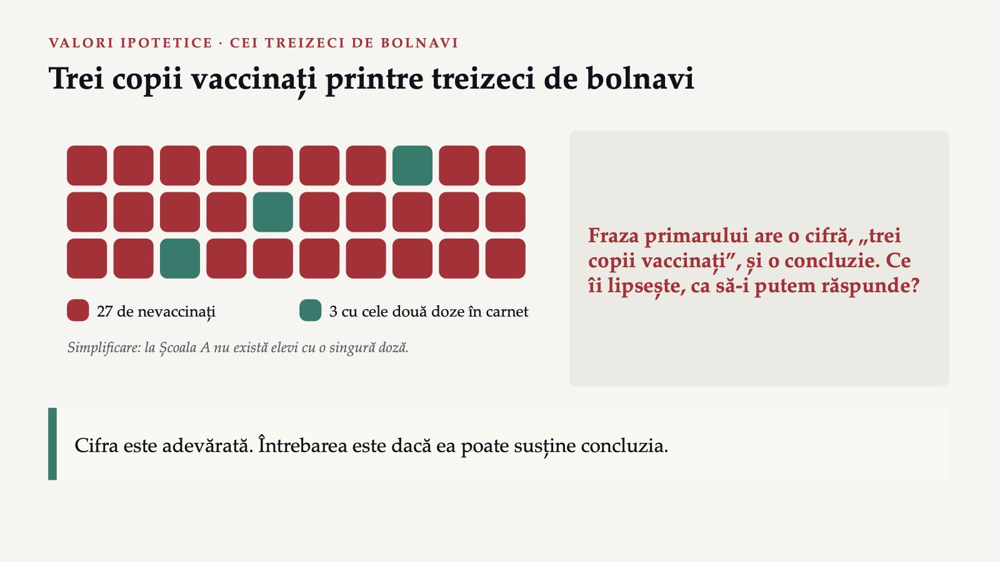
17 / 48Valorile sunt ipotetice. Dintre cei treizeci de bolnavi, trei au cele două doze în carnet, iar douăzeci și șapte sunt nevaccinați. Fraza primarului sună convingător: are o cifră și o concluzie. Ca să-i răspundem, ne trebuie ceva ce fraza lui nu are.
Pe ce se sprijină răspunsul purtătorului de cuvânt către presă?
![MENTIMETER · ANONIM A DOUA DECIZIE · VOTAȚI PE TELEFON Pe ce se sprijină răspunsul purtătorului de cuvânt către presă? A Pe faptul că trei copii vaccinați s-au îmbolnăvit: vaccinul nu protejează B Pe comparația dintre proporția bolnavilor printre vaccinați și printre nevaccinați C Pe comparația numerelor de cazuri: 27 de nevaccinați față de 3 vaccinați D Pe rata de atac din toată școala: riscul e mic, nu e nevoie de nimic Rezultatele rămân ascunse. Apoi, două minute cu colegul de bancă. Răspundeți pe telefon, la codul afișat. menti.com](diapozitive/C05/018.jpg) 18 / 48
18 / 48Votați singuri. Gândiți-vă la ce ar trebui să conțină răspunsul, ca primarul și părinții să poată verifica ce spune.
Pe ce se sprijină răspunsul către presă? (după discuție)
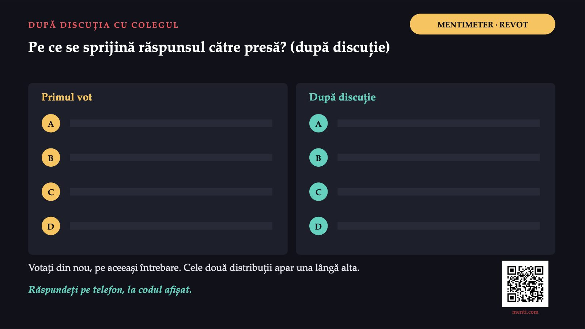
19 / 48Același vot, după discuție. Comparăm cele două distribuții. Pentru a-l judeca, avem nevoie de al doilea termen nou.
Rata de atac
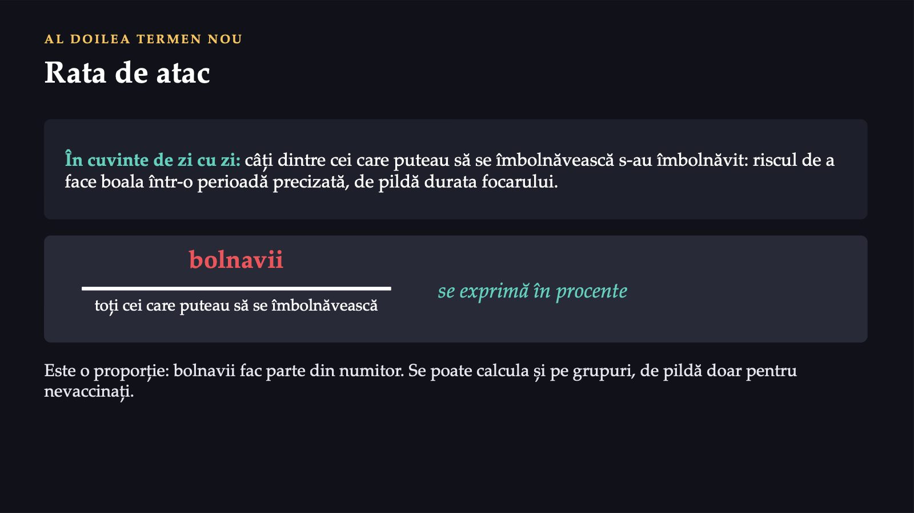
20 / 48Al doilea termen nou: rata de atac. Ne spune câți dintre cei care puteau să se îmbolnăvească s-au îmbolnăvit efectiv. Perioada este chiar durata focarului. Cuvântul rată este puțin înșelător, pentru că este de fapt o proporție.
27 ÷ 120 = ?
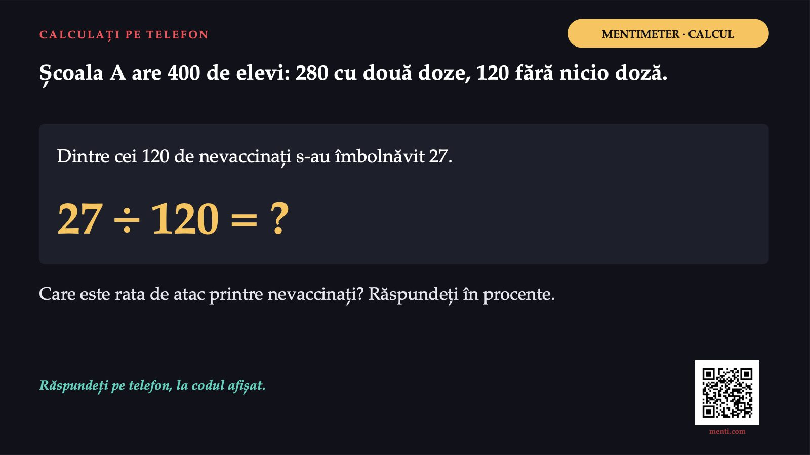
21 / 48Valorile sunt ipotetice. Școala A are 400 de elevi, 280 cu două doze și 120 fără nicio doză. Dintre cei 120 de nevaccinați s-au îmbolnăvit 27. Calculați rata de atac printre nevaccinați și scrieți-o în procente.
circa 21
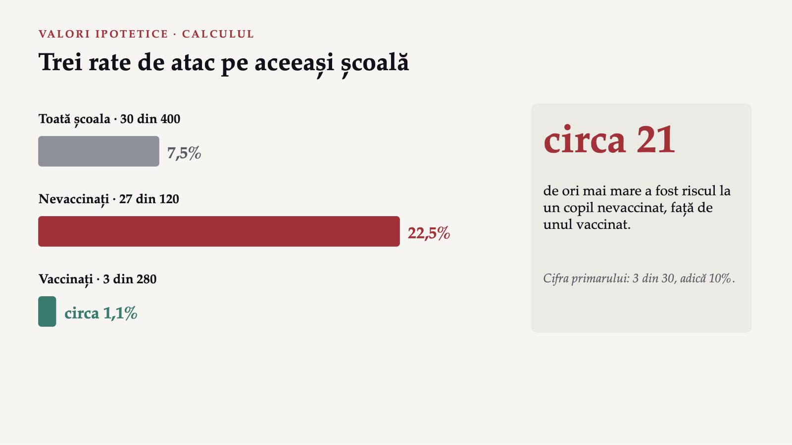
22 / 48Valorile sunt ipotetice. În toată școala, rata de atac este 7,5%. Printre nevaccinați este 22,5%, aproape un copil din patru. Printre vaccinați este circa 1,1%. Raportul este de circa douăzeci și unu de ori.
Varianta B: rate, nu numere
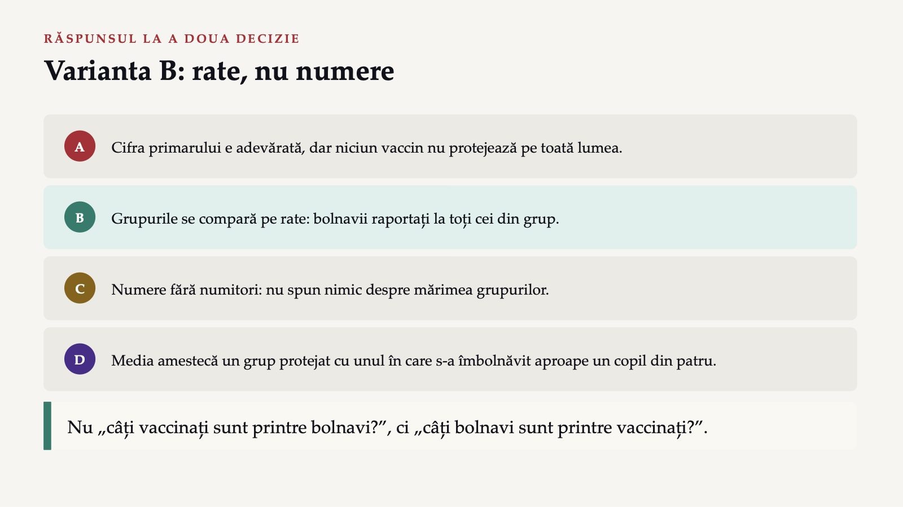
23 / 48Varianta B este cea corectă: o comparație între grupuri se face pe rate. Cele două întrebări, câți vaccinați sunt printre bolnavi și câți bolnavi sunt printre vaccinați, sună la fel și au răspunsuri foarte diferite.
Incidență și prevalență
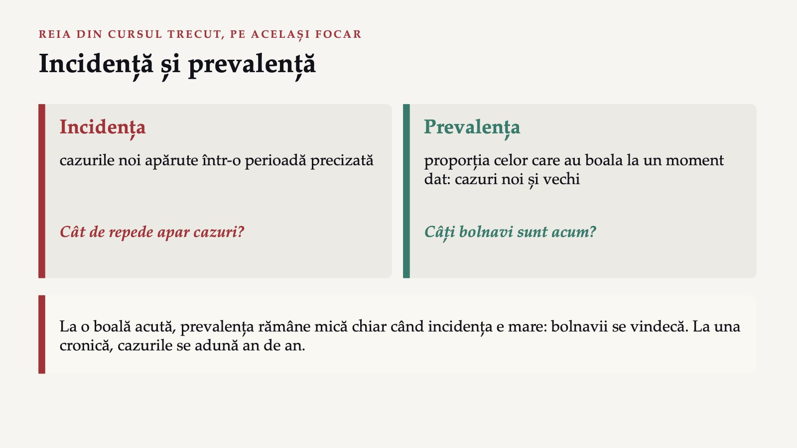
24 / 48Ați întâlnit incidența în cursul trecut. O punem acum lângă prevalență, pe aceeași școală, pentru că examenul le cere deosebite. Prima răspunde la întrebarea cât de repede apar cazuri, a doua la întrebarea câți bolnavi sunt acum.
Care dintre afirmații descrie prevalența?
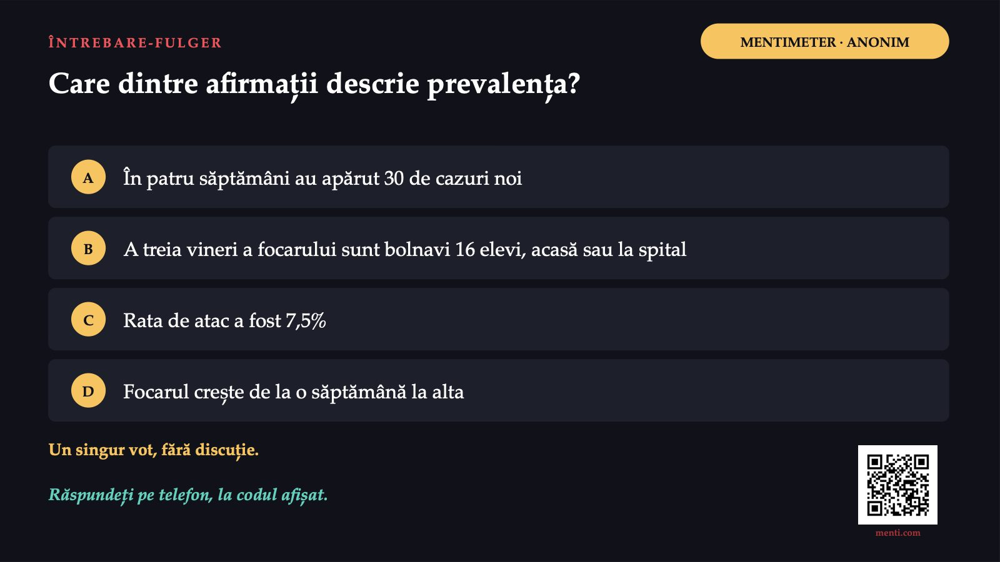
25 / 48Un singur vot, rapid. Care dintre aceste patru afirmații descrie prevalența?
30 ÷ 400 = 7,5%
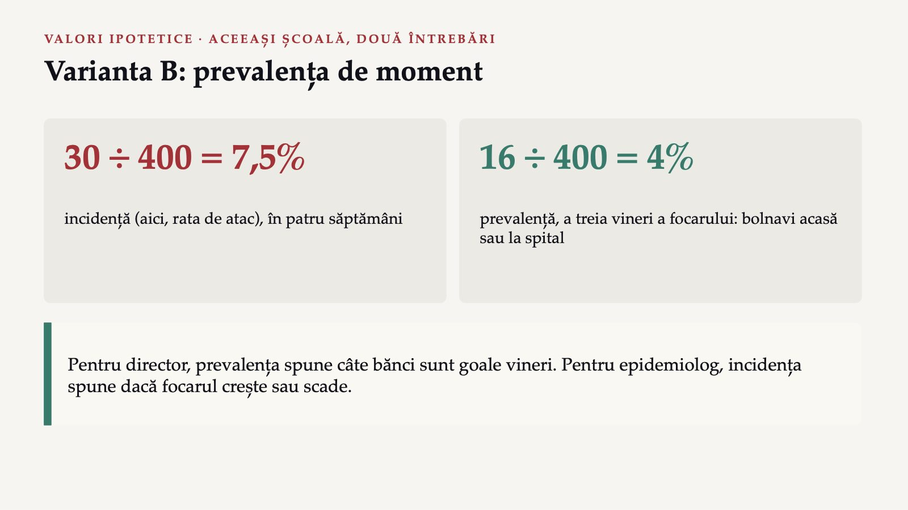
26 / 48Valorile sunt ipotetice. Incidența, în patru săptămâni, este 7,5%. Prevalența de moment, în a treia vineri, este 4%. Pentru director, prevalența spune câte bănci sunt goale vineri; pentru epidemiolog, incidența spune dacă focarul crește sau scade.
Focarul, într-un singur desen
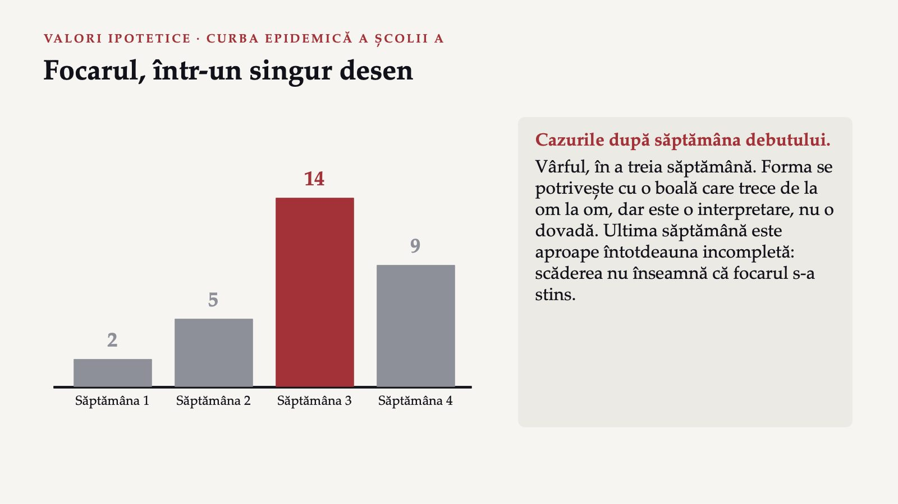
27 / 48Valorile sunt ipotetice. Lista celor treizeci de cazuri spune cine s-a îmbolnăvit; curba epidemică spune când. Cazurile cresc de la o săptămână la alta, cu un vârf în a treia, apoi scad. O curbă din ultima săptămână este aproape întotdeauna incompletă.
Letalitatea
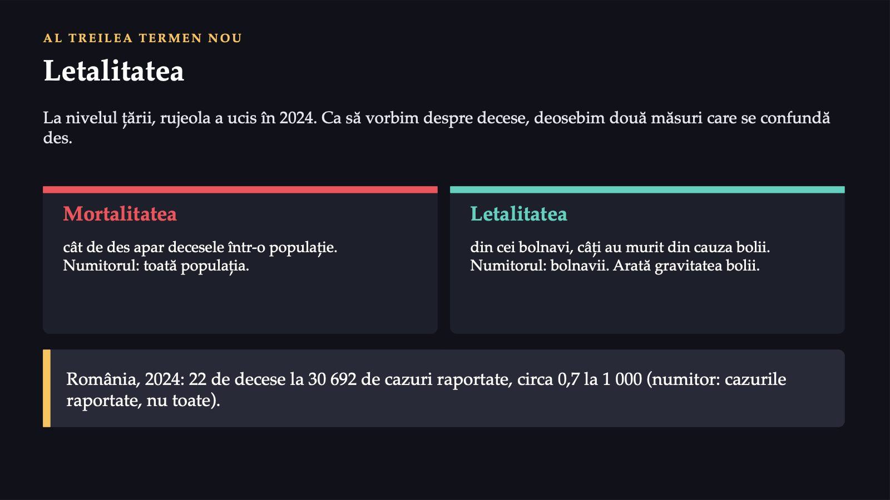
28 / 48Al treilea termen nou: letalitatea. Diferența dintre letalitate și mortalitate este numitorul. Pe datele ECDC, cele 22 de decese din România la 30 692 de cazuri raportate înseamnă circa 0,7 la 1 000 de cazuri. Cifra are o limită: numitorul sunt cazurile raportate, nu toate cazurile.
Celula de anchetă
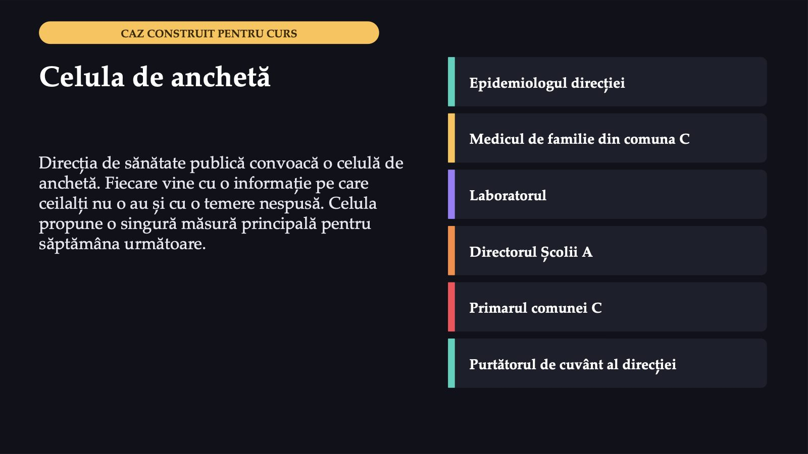
29 / 48La sfârșitul săptămânii a patra, direcția de sănătate publică convoacă o celulă de anchetă. La masă sunt șase persoane, fiecare cu o informație pe care ceilalți nu o au. Celula trebuie să propună o singură măsură principală pentru săptămâna următoare.
Scanați codul rândului vostru
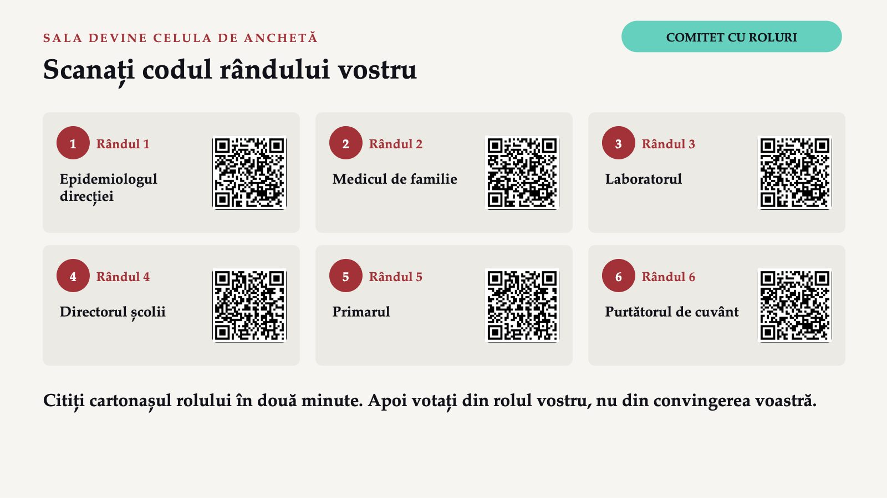
30 / 48Acum sala devine celula de anchetă. Fiecare rând scanează propriul cod și primește un rol. Cartonașul spune ce urmărește rolul, de ce se teme, ce informație are numai el și ce propoziție va spune la masă. Citiți-l în două minute și votați din rolul vostru, nu din convingerea voastră.
Ce măsură principală propune celula pentru săptămâna următoare?
![MENTIMETER · DIN ROL A TREIA DECIZIE · VOTAȚI DIN ROLUL VOSTRU Ce măsură principală propune celula pentru săptămâna următoare? A Închiderea școlii pentru o lună B Bolnavii stau acasă până la patru zile după erupție, căutare activă, vaccinare de recuperare, scrisoare către părinți C Nicio măsură până când laboratorul confirmă toate cazurile D Un comunicat care numește clasa și familiile care au refuzat vaccinarea Rezultatele rămân ascunse. Apoi trei minute: câte un reprezentant per rol. Răspundeți pe telefon, la codul afișat. menti.com](diapozitive/C05/031.jpg) 31 / 48
31 / 48Primul vot îl dați din rolul vostru. Rezultatele rămân ascunse până la revot.
Câte un reprezentant al fiecărui rol
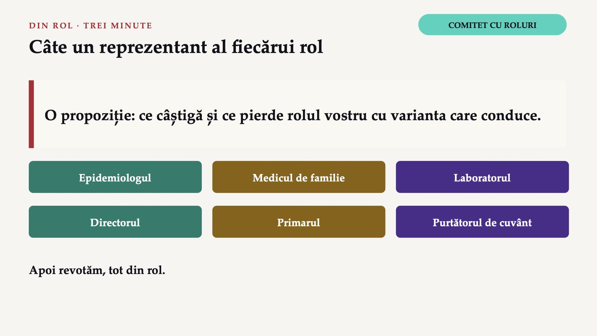
32 / 48Fiecare rol are acum un reprezentant. Spuneți într-o propoziție ce câștigă și ce pierde rolul vostru cu varianta care conduce. Apoi votăm din nou.
Ce măsură principală propune celula? (după discuția din roluri)
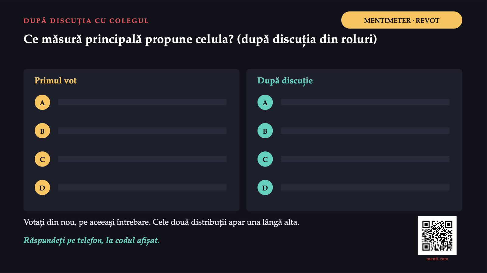
33 / 48Același vot, din rol, după ce ați auzit argumentele celorlalte roluri. Punem alături cele două distribuții.
Care decizie ar trece în această celulă și cine plătește costul ei?
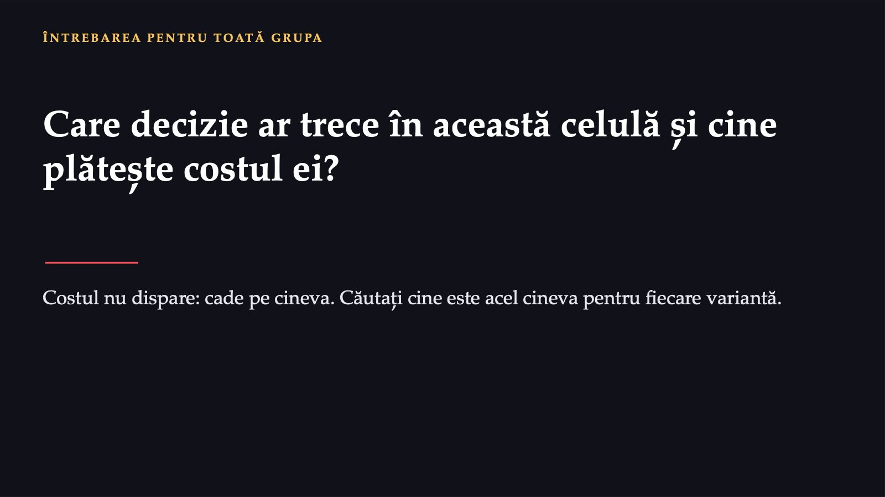
34 / 48Întrebarea pentru toată grupa: care decizie ar trece în această celulă și cine plătește costul ei.
patru zile
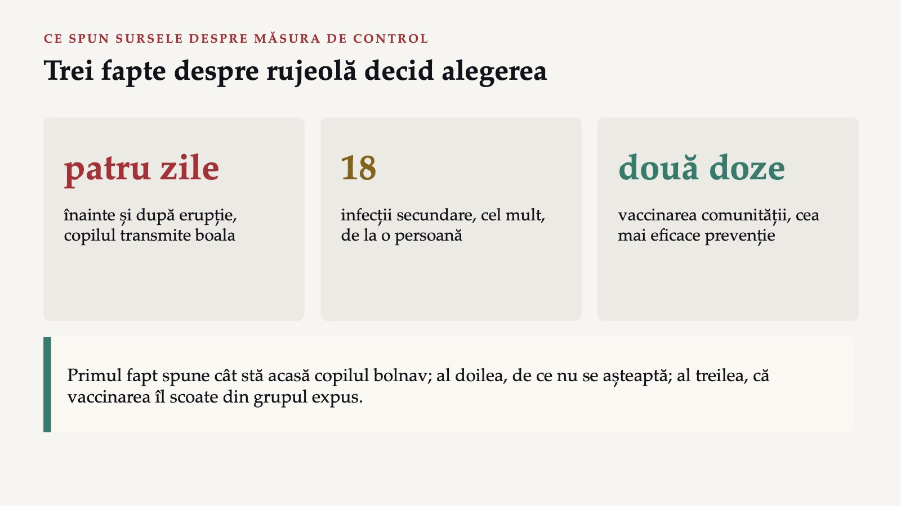
35 / 48Trei fapte decid alegerea. Boala se transmite de la patru zile înainte de erupție până la patru zile după. O persoană infectată poate produce până la 18 infecții secundare. Iar vaccinarea întregii comunități este cea mai eficace prevenție, cu două doze.
Varianta B: măsura principală, nu lista completă
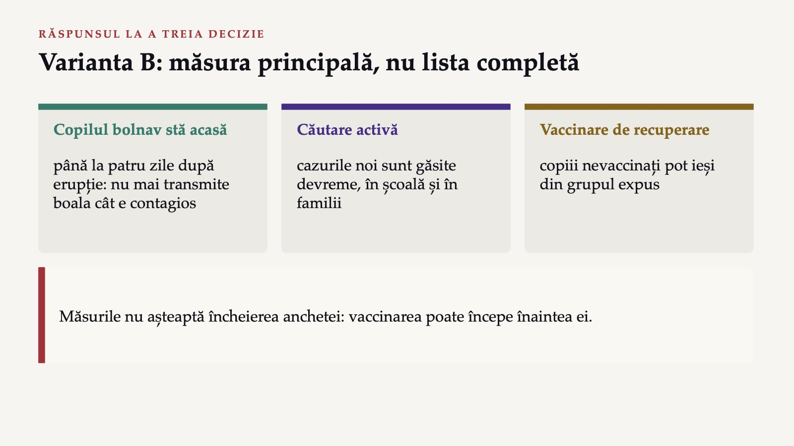
36 / 48Varianta B este măsura principală, nu lista completă a măsurilor posibile. Ea pune laolaltă trei măsuri care lucrează pe părți diferite ale lanțului. Măsurile nu așteaptă încheierea anchetei.
De ce nu A, C și D
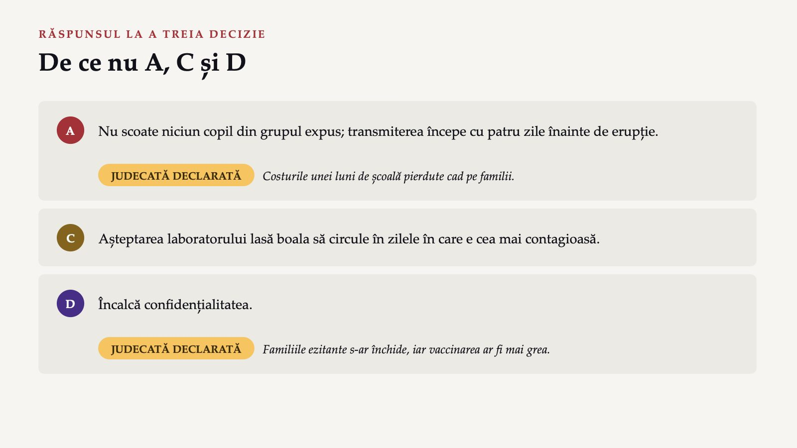
37 / 48Varianta A are avantajul vizibilității, dar faptele o contrazic: închiderea nu scoate niciun copil din grupul expus. Costurile pentru familii sunt o judecată de valoare a noastră, pe care o puteți contesta. La fel, efectul unui comunicat nominal asupra familiilor ezitante este o judecată, nu un fapt dovedit.
Comunicarea riscului: ce spune purtătorul de cuvânt
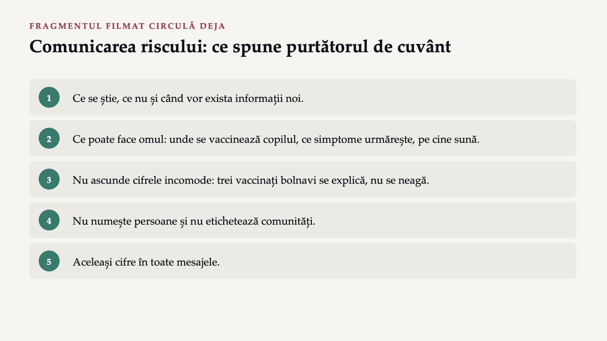
38 / 48Purtătorul de cuvânt nu poate șterge fragmentul filmat. Poate însă să dea publicului un răspuns la fel de scurt, dar corect. Comunicarea riscului are câteva reguli de bun-simț, pe care le veți exersa în proiect.
Focarul avea o cauză ușor de numit. Alte boli, nu.
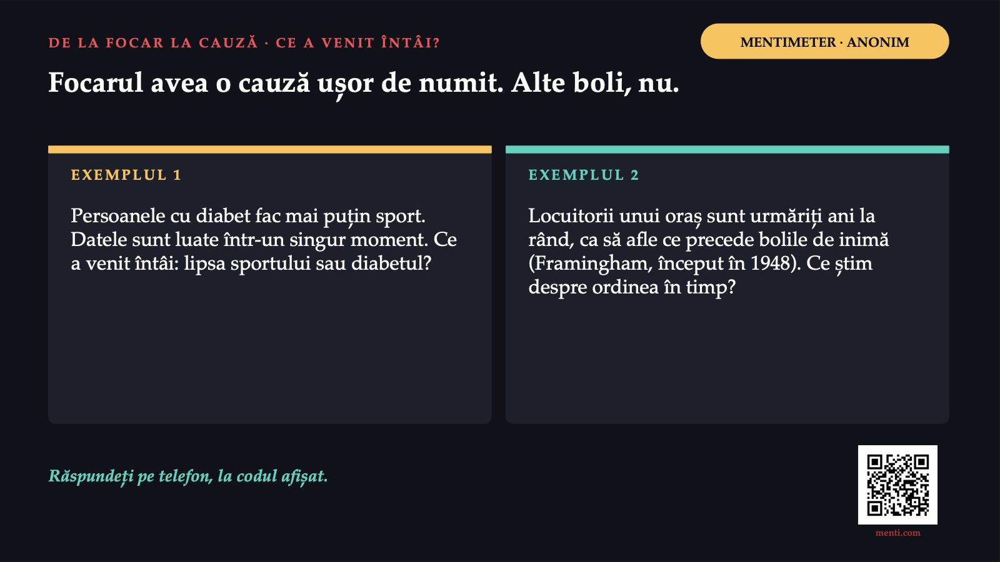
39 / 48Focarul de la Școala A avea o cauză ușor de numit: un virus. Cele mai multe probleme de sănătate publică ale României de azi nu arată așa. Pentru două exemple, vă întreb același lucru: ce a venit întâi?
Ordinea în timp și puterea asocierii
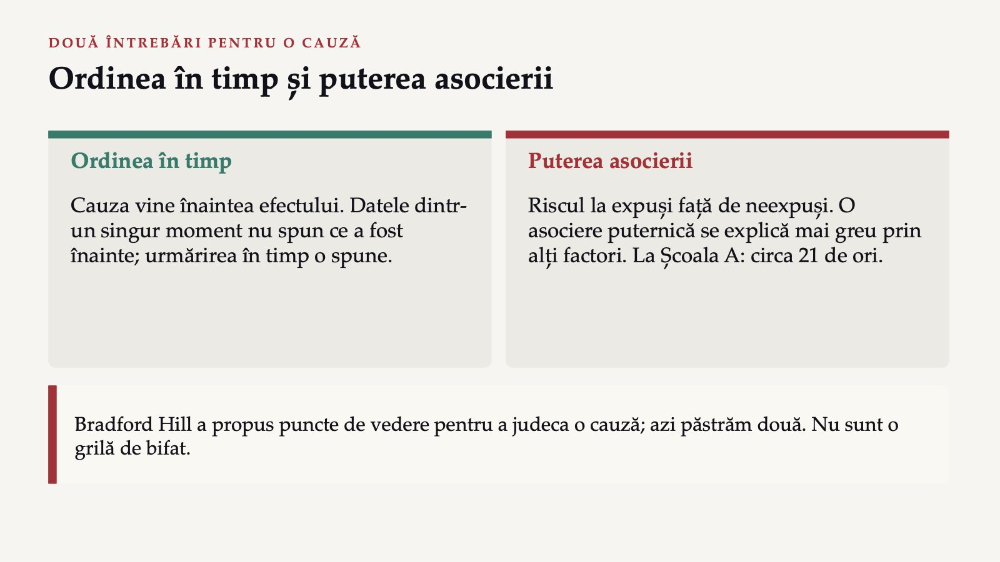
40 / 48În primul exemplu, nu putem ști ce a fost înainte, pentru că datele sunt luate într-un singur moment. În al doilea, ordinea în timp este clară, pentru că oamenii sunt urmăriți ani la rând. Din lista lui Bradford Hill păstrăm azi doar două puncte de vedere: ordinea în timp și puterea asocierii.
Pentru un copil, virusul. Pentru o țară, vaccinarea
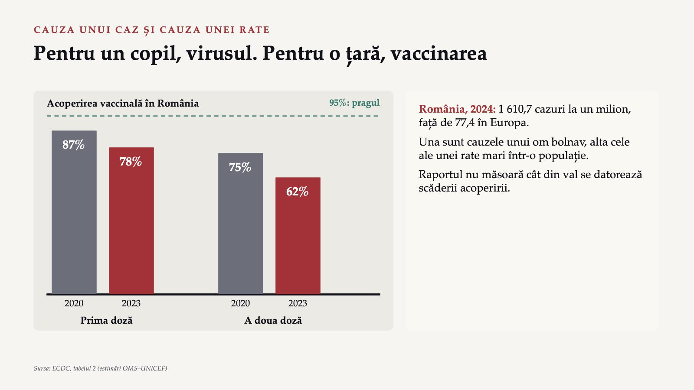
41 / 48Pentru un copil, cauza rujeolei este virusul. Pentru o țară cu 1 610,7 cazuri la un milion, față de media europeană de 77,4, cauza trebuie căutată la nivelul populației. Acoperirea cu prima doză a scăzut în România de la 87% la 78%, iar cu a doua doză de la 75% la 62%. Raportul european nu măsoară cât din val se datorează acestei scăderi.
Cifrele oficiale sunt, de regulă, un minim
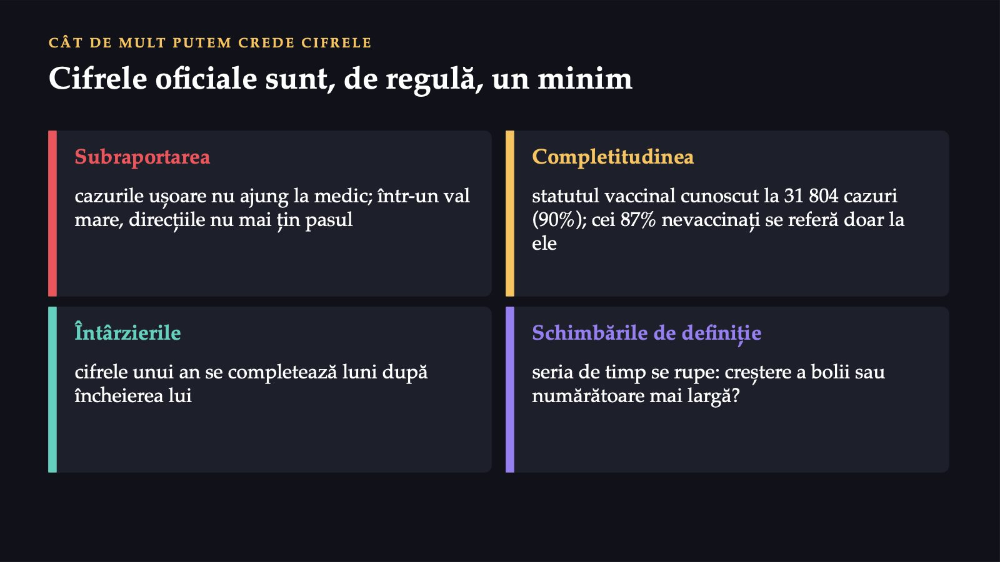
42 / 48Toate cifrele din acest curs vin din supraveghere, iar supravegherea are limite. Cifrele oficiale sunt, de regulă, un minim, nu un total. Proporția de 87% nevaccinați se referă la cazurile cu statut cunoscut, nu la toate.
Două cifre din același raport nu se potrivesc. Ce faceți?
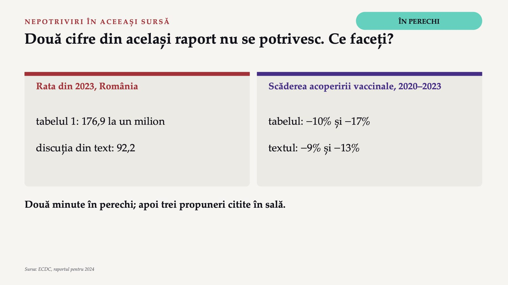
43 / 48Același raport european dă, pentru România, două valori diferite ale ratei din 2023. Dă și două perechi de valori pentru scăderea acoperirii vaccinale. Ce faceți când două cifre din aceeași sursă nu se potrivesc?
Mergeți la tabel, refaceți calculul, spuneți ce ați ales
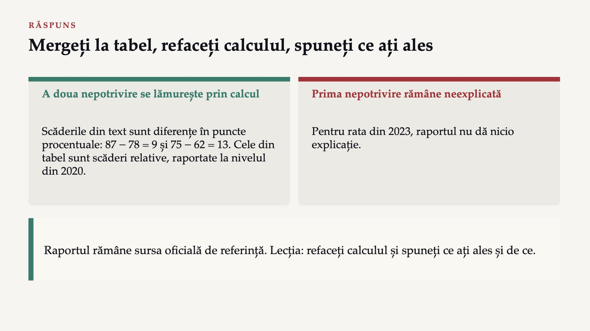
44 / 48A doua nepotrivire se lămurește prin calcul: în text sunt diferențe în puncte procentuale, în tabel sunt scăderi relative. Pentru prima, raportul nu dă nicio explicație. Lecția nu este că raportul nu merită citit; este să refaceți calculul și să spuneți ce ați ales și de ce.
Focarul de la Școala A, în cinci rânduri
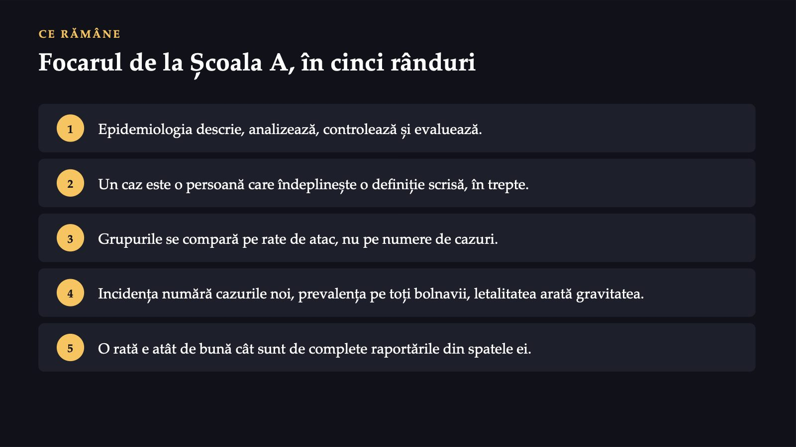
45 / 48Pe scurt, focarul de la Școala A în cinci rânduri. Un caz este o persoană care îndeplinește o definiție scrisă. Grupurile se compară pe rate, nu pe numere. Iar o rată este atât de bună cât sunt de complete raportările din spatele ei.
Căutați numitorul
![ÎN PERECHI · MENTIMETER CE FACEȚI DIFERIT DE MÂINE Căutați numitorul Când citiți „X vaccinați s-au îmbolnăvit”, întrebați: câți vaccinați și câți nevaccinați erau în total? În orice raport, căutați definiția de caz și completitudinea datelor. Cum ați explica unui părinte diferența dintre „trei copii vaccinați s-au îmbolnăvit” și „unul din aproape o sută de copii vaccinați s-a îmbolnăvit”? O propoziție, în Mentimeter. Seminarul de după curs: Județul B, seria reală a rujeolei. Răspundeți pe telefon, la codul afișat. menti.com](diapozitive/C05/046.jpg) 46 / 48
46 / 48De mâine, când citiți o știre despre persoane vaccinate care s-au îmbolnăvit, căutați numitorul. Acum, în perechi: cum ați explica unui părinte diferența dintre cele două formulări? O propoziție, în Mentimeter.
Aceleași cifre, spuse corect
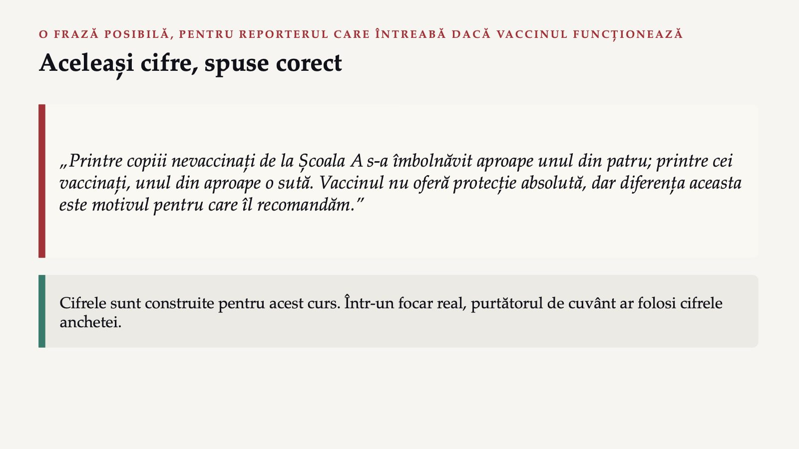
47 / 48Aceasta este o frază posibilă pentru reporterul care întreabă dacă vaccinul funcționează. Cifrele sunt construite pentru acest curs; într-un focar real, s-ar folosi cifrele anchetei.
Trei întrebări pentru final
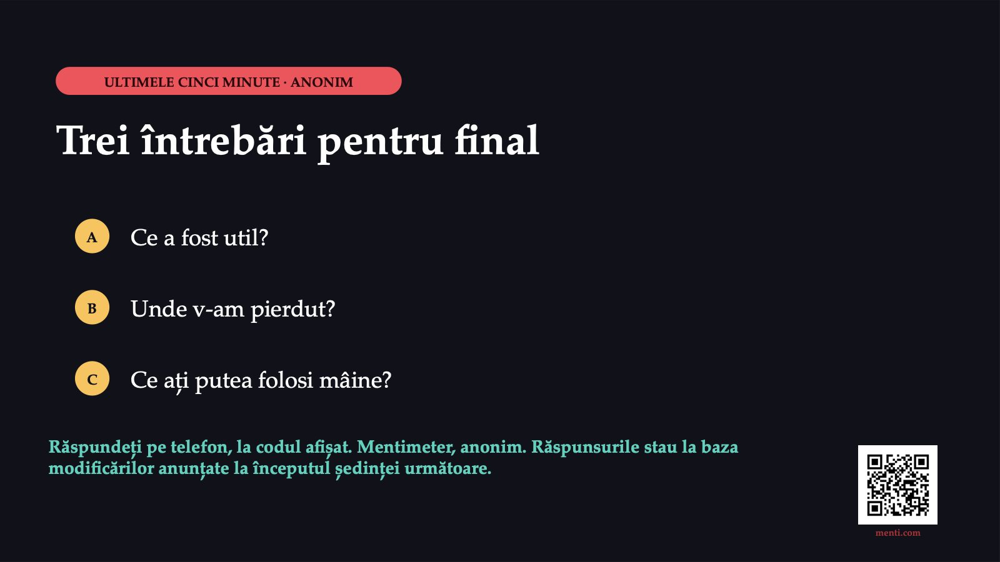
48 / 48Trei întrebări, anonim, pe Mentimeter. Fără răspunsurile voastre nu pot ști ce să schimb.
Săgeți sau spațiu: navigare · O: vedere de ansamblu · N: notele prezentatorului · F: ecran complet · Esc: închidere